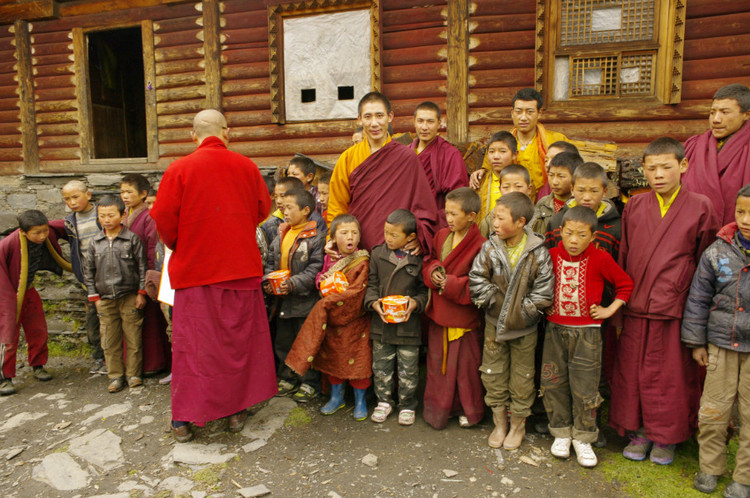

多吉彭措-堪布 （噶陀寺堪布）简介
堪布于公元1980年藏历4月15日，释迦牟尼佛降生和成道日，诞生在四川省圣地安真荣境内卡隆村。半岁时母亲带他去空达上师那里，上师给他取了一个名字，叫多吉彭措，并要求堪布母亲一定要让他做出家人，他将来一定会成为一个利益大众的大修行者。堪布1岁时母亲带他去拜访白玛达瓦仁波切请加持的时候，仁波切直接抱了堪布放在怀里，给他传了文殊礼赞三遍，同时要求堪布的母亲一定要好好养护他，不要轻视他，他将来会成为一位持教大德弘扬佛法利益大众的修行者。堪布幼年时就聪明伶俐、才智过人。堪布8岁开始在喇嘛翁噶前学习藏文，一般人用三四年才学完的的藏文，堪布用两年时间就学会了所有藏文，还有宁玛派所有佛事仪轨的善巧方便也都学会了而且运用自如，并且精通舞，画，唪三技；吹，奏，敲三艺。 堪布从小就对三宝有真诚的信心，并对大众持有悲善之心。堪布10岁到13岁一直满当地老百姓的愿为他们以不同的佛事活动来化解各种障碍等善行。
堪布14岁时听从阿曲尊者的吩咐，与启蒙师喇嘛翁噶前往鲁姆绕寺拜见了虹化大师阿曲尊者，得到了尊者的殊胜摄受，并且传授了大圆满前行解脱阶梯。堪布按照尊者的要求用了一年时间观修四加行，又用一年修了五加行。堪布在两年时间里第一次完成了修四五加行，最后在尊者前得到了窍诀大圆满的传授。尊者说堪布以后会有很大的弘法利生的成就，若是自己一个人得解脱，不如让大众得解脱，所以以后要多学一点佛教方面的知识，这样才能弘扬佛法与利益大众，有了尊者这样的命令，睿智果敢的堪布刚好年满18岁。法王如意宝来到自己前世创办的新龙顶持佛学院，堪布随去拜见法王如意宝，法王命令堪布在本佛学院学习三年，当时堪布很欢喜，因为个个缘起具备，有尊者的命令，又有法王的安排，所以就定下心来继续学习，法王如意宝每年从五明佛学院选最优秀的堪布来顶持佛学院讲经，曾经有慈城罗珠堪布、旦增加措上师、西绕桑布堪布、堪布翁切和罗丹上师等，堪布主要在罗丹上师前学习，第一年学习了《大圆满前行引导文》《佛子三十七颂文》《入菩萨行论》。第二年学习了《三律议论》《藏语语法》《数学》《修辞学》。第三年学习了《量理宝藏》《入中论》《俱舍论》，堪布本具的智慧被一一引发出来，所有了解他的堪布都对他评价甚高，而同学们则对他的聪慧羡慕不已并引以为傲。每年一月份全体同学到喇荣五明佛学院参加《持明万僧》法会。